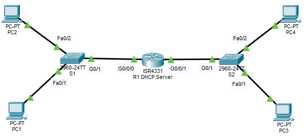

- Configure Basic Settings
- Create two networks using one router
- Set up the router as DHCP Server for both networks
- Ensure end devices get IP addresses automatically

| Device | Interface | IP Address | Subnet Mask | Default Gateway |
|---|---|---|---|---|
| R1 | G0/0/0 | 192.168.1.1 | 255.255.255.0 | NOT APPLICABLE |
| G0/0/1 | 192.168.2.1 | 255.255.255.0 | NOT APPLICABLE | |
| S1 | VLAN 1 | 192.168.1.2 | 255.255.255.0 | 192.168.1.1 |
| S2 | VLAN 1 | 192.168.2.2 | 255.255.255.0 | 192.168.2.1 |
| PC1 | NIC | DHCP | ||
| PC2 | NIC | DHCP | ||
| PC3 | NIC | DHCP | ||
| PC4 | NIC | DHCP | ||
Router>enable Router#configure terminal Router(config)#no ip domain-lookup Router(config)#hostname R1 R1(config)#interface G0/0/0 R1(config-if)#ip address 192.168.1.1 255.255.255.0 R1(config-if)#no shutdown R1(config-if)#interface G0/0/1 R1(config-if)#ip address 192.168.2.1 255.255.255.0 R1(config-if)#no shutdown R1(config-if)#ip dhcp excluded-address 192.168.1.1 192.168.1.9 R1(config)#ip dhcp excluded-address 192.168.2.1 192.168.2.9 R1(config)#ip dhcp pool LAN1_DHCP R1(dhcp-config)#network 192.168.1.0 255.255.255.0 R1(dhcp-config)#default-router 192.168.1.1 R1(dhcp-config)#dns-server 8.8.8.8 R1(dhcp-config)#domain-name nttftrg.com R1(dhcp-config)#domain-name nttftrg.com R1(dhcp-config)#ip dhcp pool LAN2_DHCP R1(dhcp-config)#network 192.168.2.0 255.255.255.0 R1(dhcp-config)#default-router 192.168.2.1 R1(dhcp-config)#dns-server 8.8.8.8 R1(dhcp-config)#domain-name nttftrg.com R1(dhcp-config)#end R1#copy running-config startup-config
Switch>enable Switch#configure terminal Switch(config)#hostname S1 S1(config)#interface vlan1 S1(config-if)#ip address 192.168.1.2 255.255.255.0 S1(config-if)#no shutdown S1(config-if)#exit S1(config)#ip default-gateway 192.168.1.1 S1(config)#exit S1#copy running-config startup-config
Switch>enable Switch#configure terminal Switch(config)#hostname S2 S2(config)#interface vlan1 S2(config-if)#ip address 192.168.2.2 255.255.255.0 S2(config-if)#no shutdown S2(config-if)#exit S2(config)#ip default-gateway 192.168.2.1 S2(config)#exit S2#copy running-config startup-config
Desktop → IP Configuration → DHCP
Desktop → IP Configuration → DHCP
Desktop → IP Configuration → DHCP
Desktop → IP Configuration → DHCP
R1#show ip interface brief R1#show ip dhcp binding R1#show ip dhcp pool S1#show ip interface brief C:/>ipconfig /all
Configured and verified Router as a DHCP Server